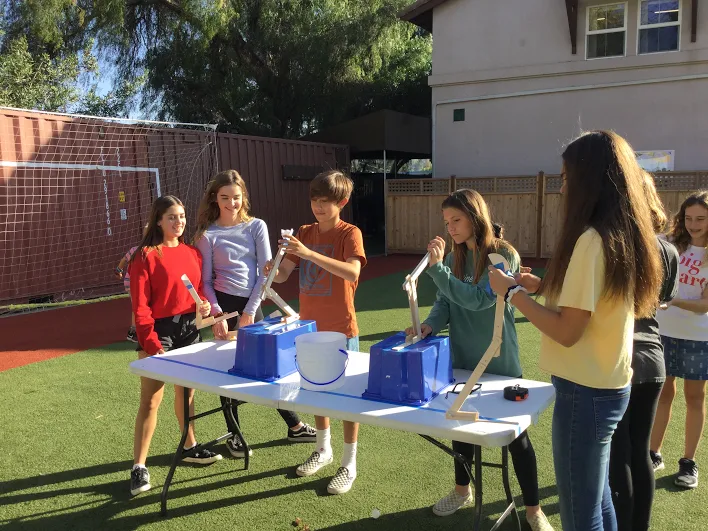

Whitebox Learning Project
My prosthetic design
Me (right) and the class testing our prosthetic arms after building them off of our virtual designs
Eight graders used Whitebox Learning to create prosthetic arms, testing them first on virtual simulations and later building functional prosthetics out of balsa wood.
3D Modeling and Printing Project
My coffee sleeve
My coffee sleeve design on Sketchup
Eight graders made prosthetic adaptors built for attaching to a prosthetic arm made by Mrs. Trout. I chose to make a coffe/drink sleeve to help any person using the prosthetic hand hold drinks over a long period of time.
VEX Project

VEX Robot Code

Working on building my VEX Robot with my team

Working on coding my VEX Robot with my team
Eigth graders both built and coded VEX robots. We got to showcase our work in a fun competition where we had to link the robots to controllers and have them pick up mini soccer balls and footballs for points.
Website Design Project

The coding for this website :-)
Eigth graders coded their own websites after learning HTML and CSS code from Khan Academy. CSS was used to style the websites.